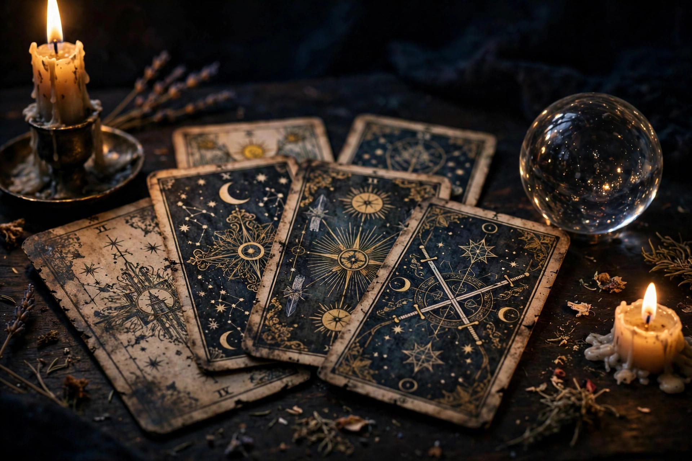
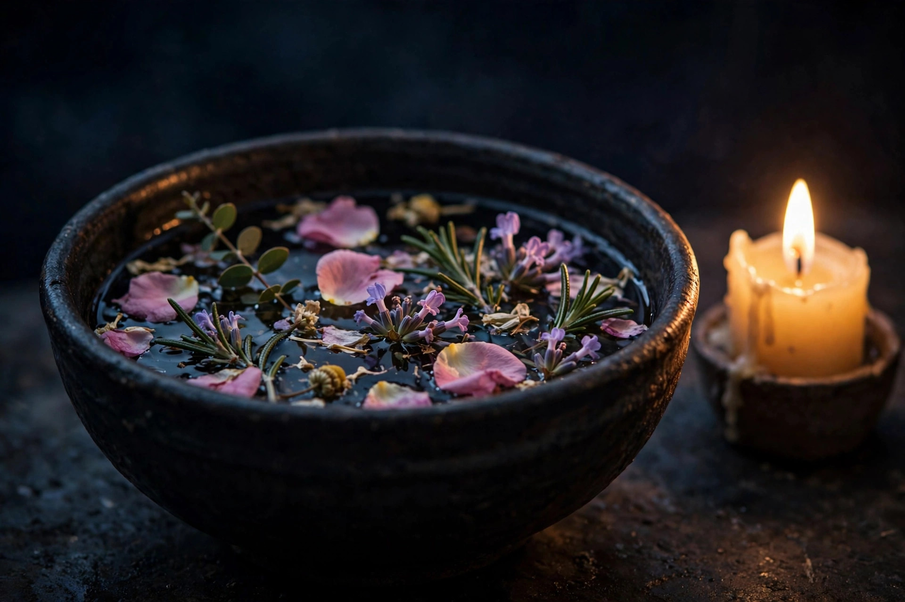

¿Necesitas una consulta? A la luz de la vela, en privado y con calma: sal con claridad y con tu remedio indicado.
Lunes a viernes · 10:30 AM – 3:30 PM
Citas solo por el calendario en línea · Pago con Square
Primero va la consulta: ahí se ve tu caso y se te indica lo que necesitas. Sin compromiso de más nada.

Tu lectura, en privado, para entender lo que te está pasando y qué camino tomar.
Para quitarte lo cargado y lo que te está frenando, según lo que salga en tu consulta.

Baños espirituales preparados para tu caso, con sus indicaciones paso a paso.
El remedio que tu consulta indique, preparado para ti y explicado con calma.
Tres pasos, como las fases de la luna.
En el calendario en línea eliges el día y la hora que te convengan.
De lunes a viernes, entre 10:30 AM y 3:30 PM, en privado y sin prisa.
Si tu caso lo lleva, sales con tu limpieza, tu baño o tu remedio indicado.
Lunes a viernes · 10:30 AM – 3:30 PM · Pago con Square